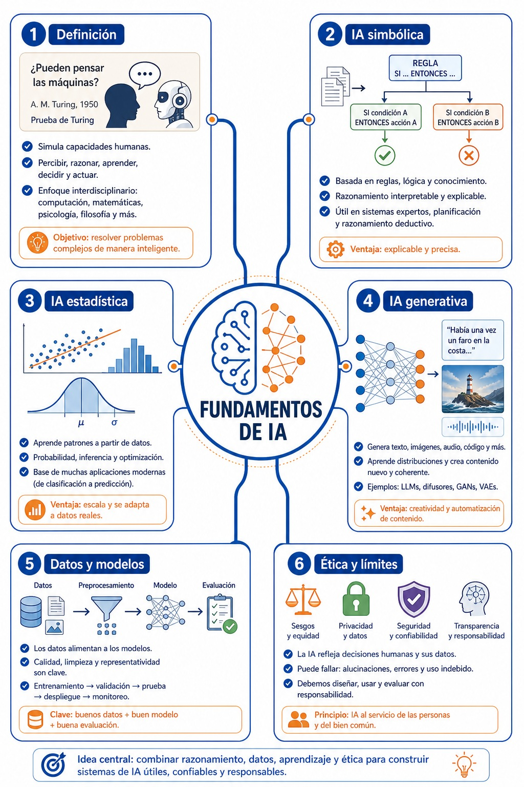
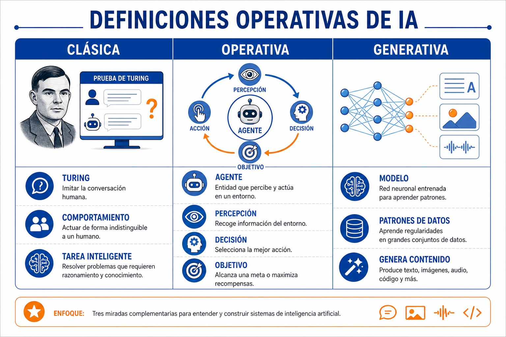
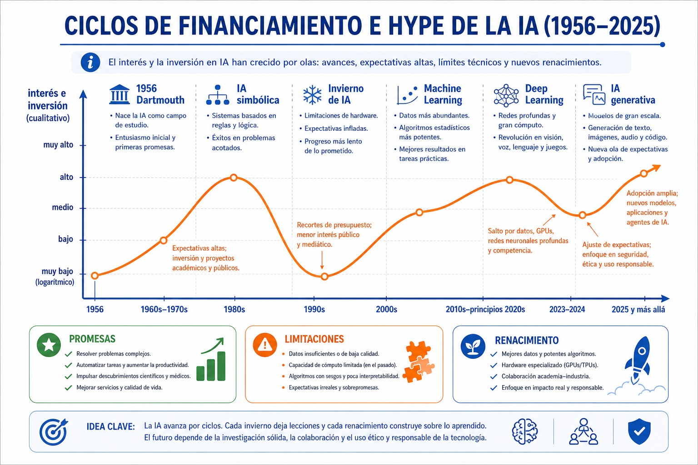
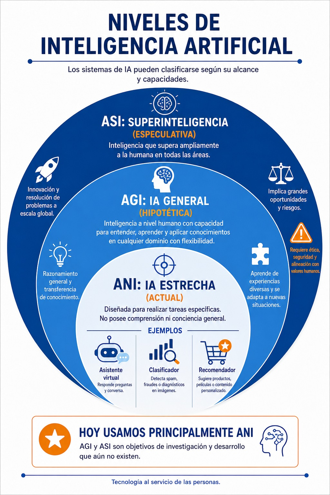
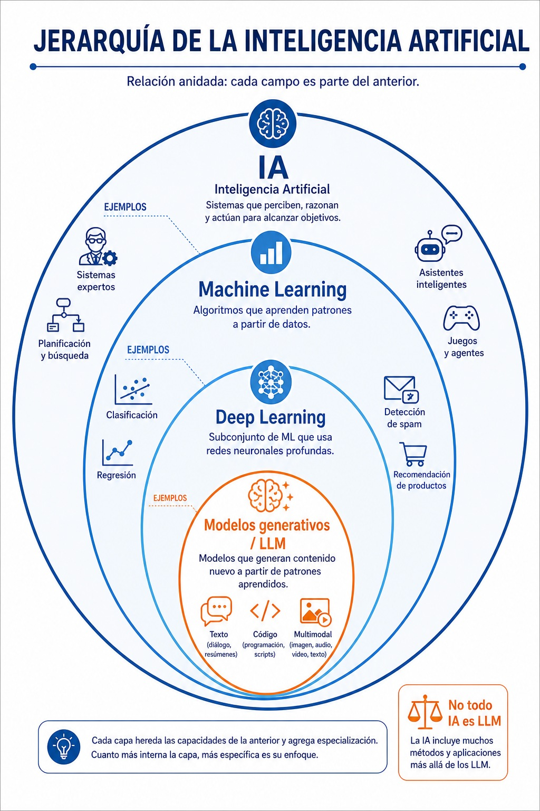
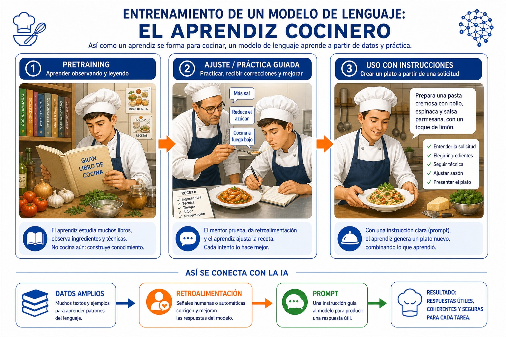
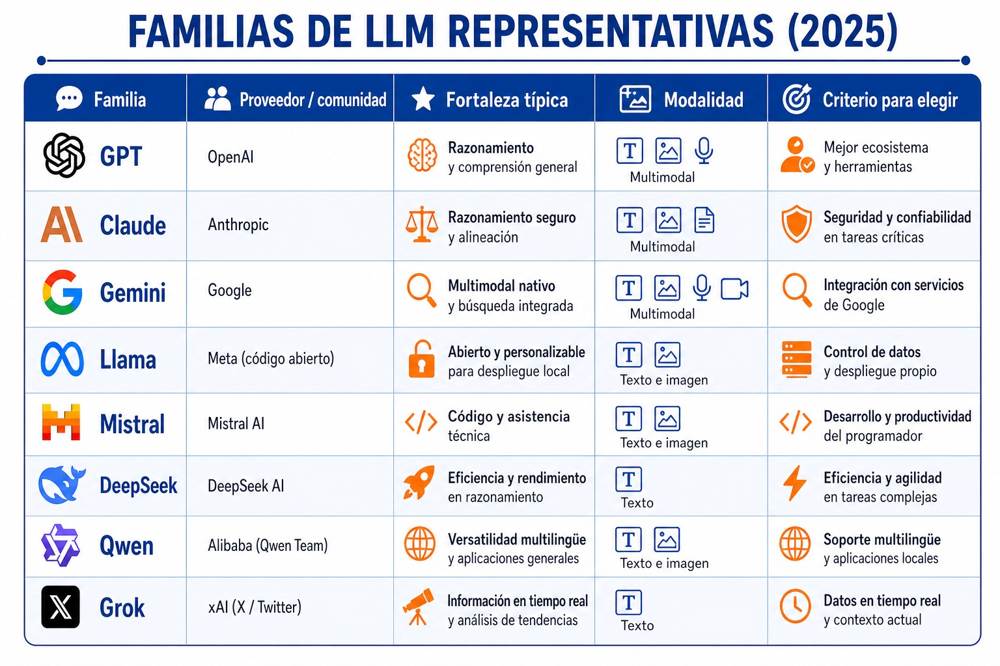

Colegio Nuevo Tecno
Inteligencia Artificial Básica
Alfabetización en IA generativa para construir un tutor personal
Alfabetización en IA generativa para construir un tutor personal
Manual 3 / Semestre 1
Este primer semestre funciona como un manual completo: inicia con las bases, desarrolla el caso conductor y cierra con evaluación, recursos, glosario, bibliografía e índice analítico. La continuidad del siguiente semestre amplía la misma ruta sin repetirla.
Manual 3 / Semestre 1
| Unidad | Caso | Temas | Producto |
|---|---|---|---|
| U01 | Fundamentos e Historia de la IA Antes de construir el tutor, el equipo entiende qué hace posible a la IA y qué límites conserva. | Definiciones operativas de IA; Turing, Dartmouth e inviernos de IA; Machine learning, deep learning y modelos fundacionales; Cómo aprende un modelo sin entrar en matemáticas pesadas; Limitaciones: error, sesgo y alucinación; Primera evaluación de una respuesta generada | Línea de tiempo comentada y definición operativa del tutor IA. |
| U02 | Tu Primer Asistente Conversacional El equipo compara asistentes para elegir la base del tutor IA personal. | Anatomía de un chat; Tokens, contexto y memoria; Comparación entre asistentes; Limitaciones y fecha de corte; Verificación con fuentes; Primera conversación útil del tutor | Tabla comparativa de asistentes y conversación inicial corregida. |
| U03 | Prompt Engineering Fundamental El tutor mejora cuando las instrucciones dejan de ser vagas. | Rol, tarea, contexto y formato; Zero-shot y few-shot; Estructura de salida; Iteración y comparación; Antipatrones frecuentes; Banco de instrucciones personales | Banco de 20 instrucciones personales para estudiar. |
Manual 3 / Semestre 1
| Unidad | Caso | Temas | Producto |
|---|---|---|---|
| U04 | IA Generativa Multimodal El tutor cobra voz, imagen, video y lectura de documentos. | Texto, imagen, audio y video; Instrucciones visuales; Guion breve; Verificación multimodal; Riesgos de deepfake; Cápsula educativa del tutor | Cápsula educativa multimedia de 60 segundos. |
| U05 | IA para Estudio e Investigación El tutor estudia un PDF contigo sin inventar citas. | Fuentes y documentos; Resumen con evidencia; Mapas de lectura; Búsqueda con citas; Citación y uso responsable; Notebook de estudio | Notebook de estudio con fuentes, resumen, mapa y verificación. |
Manual 3 / Semestre 1
El semestre construye un tutor IA por capas: comprender qué es la IA, conversar con asistentes, diseñar instrucciones claras, usar medios multimodales y estudiar con fuentes verificables.
Manual 3 / Semestre 1
Manual 3 / Semestre 1
Las infografías deben ocupar ancho completo o página horizontal cuando tengan texto. Ninguna imagen se encierra en un cuadro que reduzca su lectura.
Cada actividad explica qué comparar, qué calcular, qué escribir y qué evidencia entregar. Si requiere investigación externa, lo dice de forma explícita.
Antes del banco aparece un ejemplo resuelto de principio a fin. El banco usa los modelos de la unidad y varía entre cálculo, tabla, relación de columnas, explicación y decisión de caso.
De la pregunta de Turing al tutor que vas a construir: qué hace posible a la IA y qué límites conserva.
Manual 3 / U01 / 40% teoría - 60% práctica
En la sala de cómputo del colegio, alguien escribe en un chatbot: "explícame qué es la inteligencia artificial". La respuesta mezcla robots de película, términos técnicos y promesas enormes. El grupo se ríe primero y duda después: ¿qué parte de eso es cierta? Nadie puede construir un tutor IA confiable sobre ideas confusas. Esta unidad ordena esa confusión: separa lo que la IA es, lo que no es y lo que todavía no existe.
La historia de la IA no avanza en línea recta. Pasa por preguntas filosóficas, laboratorios universitarios, inviernos de baja inversión, redes neuronales que resurgen con datos masivos y modelos generativos capaces de producir lenguaje. Conocer ese recorrido evita tratar a la IA como magia o como amenaza inevitable.
Un modelo de IA se parece a un estudiante entrenado con muchísimos ejemplos: reconoce patrones con rapidez, pero necesita una consigna clara y una revisión externa para no equivocarse con confianza.
Manual 3 / U01 / 40% teoría - 60% práctica
La unidad va del relato al procedimiento. Cada subtema abre con teoría breve, presenta un visual de trabajo y cierra con una actividad conectada al caso conductor: tu tutor IA personal. No se pide resolver nada que no haya sido explicado o marcado como investigación propia.
| # | Subtema operativo | Visual de apoyo |
|---|---|---|
| 1 | ¿Qué es la IA? Tres definiciones operativas | Cuadro comparativo de definiciones |
| 2 | Turing, Dartmouth, inviernos y renacimientos | Gráfica de ciclos de interés 1956-2025 |
| 3 | Niveles de IA: estrecha, general y súper-IA | Infografía ANI · AGI · ASI |
| 4 | Jerarquía: IA, machine learning, deep learning y LLM | Diagrama de capas anidadas |
| 5 | Cómo aprende un modelo de lenguaje | Infografía del aprendiz cocinero |
| 6 | Familias de modelos y primera evaluación | Tabla de familias LLM 2025 |
Línea de tiempo comentada de la IA y definición operativa de tu tutor: qué hará, con qué modelo base y qué no debe prometer.
Manual 3 / U01 / 40% teoría - 60% práctica

Manual 3 / U01 / 40% teoría - 60% práctica
Piensa en el mapa como el plano de un edificio que vas a recorrer completo durante la unidad. Entras por la pregunta de Turing —¿pueden pensar las máquinas?—, subes por la escalera de las reglas (la IA simbólica que decide con "si pasa esto, entonces haz aquello"), cruzas al ala de los datos (la IA estadística que aprende patrones de miles de ejemplos) y llegas al taller generativo, donde el modelo ya no solo clasifica: produce texto, imágenes y audio nuevos.
Las dos salas finales sostienen todo el edificio: sin datos de calidad no hay modelo útil, y sin ética no hay sistema confiable. Tu tutor IA vivirá en el taller generativo, pero heredará los problemas de las otras salas: reglas rígidas, datos sesgados o promesas exageradas.
Cada decisión sobre tu tutor —qué modelo usar, qué datos darle, qué prometer— corresponde a una zona del mapa. Cuando algo falle, este plano te dice en qué sala buscar la causa.
Manual 3 / U01 / 40% teoría - 60% práctica
"Inteligencia artificial" se usa para vender celulares, asustar en noticieros y nombrar investigaciones serias. Para trabajar necesitas definiciones operativas: definiciones que te dejan decidir, frente a un sistema concreto, si lo analizas como IA y con qué criterio.
Una máquina muestra inteligencia si su conversación es indistinguible de la de una persona. Es la vara del comportamiento: no pregunta cómo funciona por dentro, sino si imita bien.
Un sistema es un agente inteligente si percibe su entorno, decide y actúa para alcanzar un objetivo. Es la vara de la acción: sirve para analizar desde un termostato hasta un auto autónomo.
Un modelo entrenado con grandes datos aprende patrones y produce contenido nuevo: texto, imagen, audio o código. Es la vara de la producción: describe a ChatGPT, Claude o Gemini.
Las tres miradas no compiten: son lentes distintos. Tu tutor IA se construye con la tercera, se evalúa con la primera y se diseña con la segunda.
Manual 3 / U01 / 40% teoría - 60% práctica

Manual 3 / U01 / 40% teoría - 60% práctica
Frente a un sistema real, la pregunta no es "¿esto es IA?", sino "¿con qué definición lo analizo mejor?". Un corrector ortográfico no conversa como persona, pero percibe texto, decide y actúa: se analiza mejor como agente. Un generador de imágenes no persigue objetivos en un entorno, pero produce contenido nuevo desde patrones: se analiza con la mirada generativa. Esa elección no es teórica: determina qué le puedes exigir al sistema y qué evidencia usar para evaluarlo.
| Sistema | Definición que mejor aplica | Justificación breve |
|---|---|---|
| Corrector ortográfico del celular | ||
| Chatbot que responde dudas escolares | ||
| Cámara que detecta rostros | ||
| Recomendador de videos | ||
| Generador de imágenes | ||
| Navegador GPS que recalcula ruta |
Escribe con cuál de las tres definiciones evaluarás a tu tutor IA y qué evidencia concreta exigirás (respuestas correctas, acciones útiles o contenido bien generado).
Manual 3 / U01 / 40% teoría - 60% práctica
En 1950, Alan Turing publicó la pregunta que abrió el campo: ¿pueden pensar las máquinas? En 1956, en el congreso de Dartmouth, un grupo de investigadores bautizó la disciplina: "inteligencia artificial". El entusiasmo inicial fue enorme: se prometieron traductores perfectos y máquinas razonadoras en pocos años.
La realidad fue más lenta. La IA simbólica —sistemas de reglas "si... entonces..."— resolvió problemas acotados, pero no escaló al mundo real. Cuando las promesas no se cumplieron, llegaron los inviernos de la IA: recortes de inversión y pérdida de interés público en los años setenta y finales de los ochenta.
El campo renació por dos vías: datos masivos de internet y procesadores capaces de entrenar redes neuronales profundas. En 2012, AlexNet ganó el concurso de reconocimiento de imágenes y reabrió la era del deep learning. En 2017, la arquitectura Transformer permitió modelos de lenguaje gigantes, y desde 2020 la IA generativa —GPT, Claude, Gemini— llevó esa tecnología a cualquier persona con un navegador.
La historia de la IA avanza por ciclos: promesa alta, límite técnico, invierno y renacimiento con mejores herramientas. Cada invierno dejó lecciones; cada renacimiento construyó sobre lo aprendido.
Manual 3 / U01 / 40% teoría - 60% práctica

Manual 3 / U01 / 40% teoría - 60% práctica
Una gráfica de ciclos no se memoriza: se interroga. Cada subida responde a un avance técnico real más una ola de expectativas; cada bajada, a un límite que el hardware o los datos de la época no podían superar. Saber leer esa curva te protege de los dos errores típicos: creer que la IA actual lo puede todo, o despreciarla como moda pasajera.
| Momento | Década aproximada | ¿Qué lo causó? |
|---|---|---|
| Pico de expectativas | ||
| Invierno | ||
| Presente |
Manual 3 / U01 / 40% teoría - 60% práctica
No toda la IA es igual de capaz, y confundir niveles produce miedos y promesas falsas. La clasificación estándar distingue tres alcances:
Diseñada para tareas específicas: traducir, recomendar, conversar, detectar spam. Puede superar a las personas en su tarea, pero no transfiere su habilidad a otros dominios. Todo lo que usas hoy —incluido tu futuro tutor— es ANI.
Tendría flexibilidad humana: aprender cualquier dominio, transferir conocimiento y razonar en contextos nuevos. Es objetivo de investigación; no existe todavía.
Superaría ampliamente a la inteligencia humana en todas las áreas. Pertenece al terreno de la hipótesis y el debate ético, no al de los productos.
La ANI es una caja de herramientas especialistas: el desarmador es excelente con tornillos e inútil con clavos. La AGI sería un aprendiz universal que domina cualquier oficio. Hoy solo existen las herramientas.
Manual 3 / U01 / 40% teoría - 60% práctica

Manual 3 / U01 / 40% teoría - 60% práctica
Ubicar el nivel correcto cambia lo que puedes exigir. A una ANI le exiges precisión en su tarea, no sentido común universal. Si tu tutor falla explicando un tema que no conoce, no está "fallando como persona": está operando fuera de su tarea estrecha. Esa distinción será parte de tu definición operativa.
Tu tutor será una ANI conversacional. Escribe dos cosas que NO debe prometer (por ejemplo: "saberlo todo") y cómo lo declararás en su presentación.
Manual 3 / U01 / 40% teoría - 60% práctica
Los términos IA, machine learning, deep learning y LLM se usan como sinónimos en redes sociales, pero son capas anidadas: cada una es parte de la anterior y agrega especialización.
| Capa | Qué es | Ejemplos |
|---|---|---|
| IA | Campo general: sistemas que perciben, razonan o actúan para alcanzar objetivos. | Sistemas expertos, planificadores, asistentes |
| Machine learning | Subcampo que aprende patrones a partir de datos, sin reglas escritas a mano. | Detección de spam, recomendaciones |
| Deep learning | Machine learning con redes neuronales profundas de muchas capas. | Reconocimiento de voz e imágenes |
| LLM / generativos | Deep learning aplicado a generar contenido nuevo: texto, código, imágenes, audio. | GPT, Claude, Gemini |
No todo lo que es IA es un LLM. Cuando alguien diga "la IA hizo tal cosa", pregunta: ¿qué capa de la jerarquía actuó? La respuesta cambia qué límites aplican y qué evidencia pedir.
Manual 3 / U01 / 40% teoría - 60% práctica

Manual 3 / U01 / 40% teoría - 60% práctica
La jerarquía no es un dibujo decorativo: es una herramienta de diagnóstico. Si un sistema falla, la capa te dice dónde buscar. ¿Reglas rígidas que no cubren un caso? Problema de IA simbólica. ¿Patrones aprendidos de datos sesgados? Problema de machine learning. ¿Texto fluido pero inventado? Problema típico de LLM.
| Criterio | Machine learning clásico | Modelo generativo (LLM) |
|---|---|---|
| Datos que necesita para funcionar | ||
| Tipo de salida que produce | ||
| Ejemplo escolar concreto |
Tu tutor vive en la capa más interna (LLM), así que hereda los riesgos de todas las capas: datos sesgados, patrones mal aprendidos y generación convincente pero falsa. Tenlo presente al redactar sus límites.
Manual 3 / U01 / 40% teoría - 60% práctica
Un LLM no nace sabiendo: pasa por fases de formación, igual que un aprendiz de oficio. Entenderlas —sin matemáticas pesadas— te permite saber en qué fase puedes influir tú como usuario.
El modelo "lee" cantidades enormes de texto y aprende a predecir la palabra siguiente. De esa práctica masiva emergen patrones de gramática, hechos y estilos. Aún no obedece instrucciones: solo construyó conocimiento.
Personas y sistemas califican respuestas del modelo: cuáles son útiles, seguras y honestas. El modelo se ajusta para preferir ese tipo de respuesta. Aquí aprende a comportarse como asistente.
Ya entrenado, el modelo recibe tu instrucción más el contexto que le des, y genera una respuesta combinando lo aprendido. Esta es la única fase donde tú decides: la calidad de tu prompt cambia la calidad de la salida.
El modelo no consulta "la verdad": produce lo más probable según sus patrones. Por eso puede alucinar —afirmar con seguridad algo falso— y por eso toda respuesta importante se verifica.
Manual 3 / U01 / 40% teoría - 60% práctica

Manual 3 / U01 / 40% teoría - 60% práctica
Una analogía sirve cuando puedes mapearla pieza por pieza al fenómeno real y, sobre todo, cuando sabes dónde se rompe. El aprendiz cocinero estudia recetarios (preentrenamiento), recibe correcciones del mentor (ajuste) y cocina por encargo (prompt). Pero el cocinero entiende lo que hace; el modelo solo reproduce patrones. Detectar dónde se rompe la analogía es la mejor prueba de que entendiste el concepto.
| Fase del aprendiz | Fase real del modelo | ¿Qué puede salir mal aquí? |
|---|---|---|
| Estudiar recetarios | ||
| Recibir correcciones del mentor | ||
| Cocinar por encargo |
Manual 3 / U01 / 40% teoría - 60% práctica
Un modelo fundacional es un modelo grande entrenado con datos generales que sirve de base para muchas tareas distintas: conversar, resumir, programar, traducir. Sobre los modelos fundacionales se construyen los productos que conoces: ChatGPT usa modelos GPT, Claude usa modelos de Anthropic, Gemini usa modelos de Google.
Elegir el modelo base de tu tutor es una decisión técnica, y las decisiones técnicas usan criterios, no preferencias de moda:
El panorama de modelos cambia cada pocos meses. La tabla de la siguiente página es una fotografía de 2025: aprende a leer sus criterios, no a memorizar sus filas. Los criterios sobreviven; los nombres cambian.
Manual 3 / U01 / 40% teoría - 60% práctica

Manual 3 / U01 / 40% teoría - 60% práctica
Una tabla de familias se usa como catálogo de decisión: defines tu tarea, eliges criterios, puntúas opciones y concluyes. Ese procedimiento —matriz de decisión— te servirá toda la vida, con modelos de IA o con cualquier compra técnica.
| Criterio | Opción A: __________ | Opción B: __________ |
|---|---|---|
| Acceso gratuito suficiente para uso escolar | ||
| Modalidad que tu tutor necesita (texto, imagen, voz) | ||
| Calidad de respuesta en español (pruébala con la misma pregunta) | ||
| Total |
Manual 3 / U01 / 40% teoría - 60% práctica
En IA, algunas herramientas de evaluación son fórmulas numéricas y otras son criterios puntuables. Todas se usan igual: nombra los datos, revisa la escala, sustituye, interpreta y verifica. Estas cinco se usan en los ejemplos resueltos y en los bancos.
| Modelo, fórmula o criterio | Cuándo se usa | Elementos y escala |
|---|---|---|
precisión = aciertos / total | Evaluar respuestas verificables del tutor. | Conteos; resultado entre 0 y 1, o 0% y 100%. |
riesgo = probabilidad × impacto | Priorizar qué falla atender primero. | Cada factor se califica de 1 a 5; riesgo máximo 25. |
confianza = evidencia + coherencia + límite | Decidir si una respuesta se puede usar. | Cada componente de 1 a 4; total de 3 a 12. |
mejora = puntaje final − puntaje inicial | Medir si una segunda versión fue mejor. | Ambos puntajes en la misma escala. |
tokens ≈ palabras × 1.3 | Estimar el tamaño de un texto para un LLM. | Aproximación para español; un token es un fragmento de palabra. |
Verifica que puedes explicar cada elemento de cada fórmula sin releer. Si alguno no queda claro, márcalo: el banco de cálculo lo va a necesitar.
Manual 3 / U01 / 40% teoría - 60% práctica
Las herramientas de medición hicieron confiables a la química y a la ingeniería; con la IA pasa igual. La diferencia entre "me parece que responde bien" y "tiene precisión de 75% en veinte preguntas verificadas" es la diferencia entre opinión y evidencia. Tu tutor se evaluará con números y criterios, no con impresiones.
Manual 3 / U01 / 40% teoría - 60% práctica
El tutor responde una explicación sobre qué es la IA, pero mezcla machine learning con ciencia ficción. Evalúa la respuesta y decide si puede usarse en clase.
Manual 3 / U01 / 40% teoría - 60% práctica
La respuesta inicial no se descarta: se mide, se corrige y se vuelve a medir. Ese ciclo —medir, corregir, verificar— es exactamente lo que harás con cada salida de tu tutor.
Subraya en los seis pasos: qué fórmula se usó en cada uno, qué dato fue el más importante y qué límite debe mencionarse en la conclusión.
Manual 3 / U01 / 40% teoría - 60% práctica
Manual 3 / U01 / 40% teoría - 60% práctica
Manual 3 / U01 / 40% teoría - 60% práctica
Manual 3 / U01 / 40% teoría - 60% práctica
Manual 3 / U01 / 40% teoría - 60% práctica
Manual 3 / U01 / 40% teoría - 60% práctica
Manual 3 / U01 / 40% teoría - 60% práctica
Manual 3 / U01 / 40% teoría - 60% práctica
| Fase | Acción precisa | Evidencia |
|---|---|---|
| Preparar | Leer historia, definiciones, niveles y jerarquía de la unidad. | Preguntas introductorias contestadas y mapa anotado. |
| Aplicar | Evaluar una respuesta generada con precisión, riesgo y confianza; corregirla y volver a medir. | Cálculos visibles con fórmula, sustitución y resultado. |
| Decidir | Completar la matriz de decisión del modelo base con puntajes justificados. | Matriz con totales y conclusión técnica. |
| Entregar | Línea de tiempo comentada y definición operativa del tutor. | Producto final con límites declarados. |
20 minutos para recuperar conceptos, 50 minutos para práctica guiada con un modelo real, 30 minutos para bancos de cálculo y ejercicios, y 20 minutos para defensa o corrección.
Manual 3 / U01 / 40% teoría - 60% práctica
| Criterio | Excelente | Suficiente | Debe corregirse |
|---|---|---|---|
| Precisión conceptual | Distingue IA, ML, DL y LLM, y los niveles ANI/AGI/ASI sin confundirlos. | Hay una imprecisión menor. | Mezcla capas o niveles, o no los explica. |
| Evidencia | Los cálculos y la matriz pueden revisarse y replicarse. | La evidencia existe pero falta detalle. | No se puede comprobar el proceso. |
| Producto | Línea de tiempo y definición operativa responden directamente al caso. | Responde parcialmente. | No resuelve la tarea. |
| Comunicación | Separa hecho, interpretación y límite en cada conclusión. | Comunica con algunas ambigüedades. | Presenta conclusión sin soporte. |
Antes de entregar, califícate tú mismo con esta rúbrica y anota qué criterio quedó más débil. La autoevaluación honesta es parte del producto.
Manual 3 / U01 / 40% teoría - 60% práctica
En 1950, Alan Turing publicó el artículo "Computing Machinery and Intelligence", donde propuso reemplazar la pregunta "¿pueden pensar las máquinas?" por un juego de imitación medible. Setenta y cinco años después, millones de personas conversan a diario con máquinas que habrían pasado su prueba con facilidad. Sin embargo, la pregunta de fondo sigue abierta: ¿imitar la conversación es lo mismo que entender?
Busca una nota o video breve sobre Turing o sobre el congreso de Dartmouth y léelo con esta pregunta en mente: ¿qué pregunta de aquella época sigue vigente cuando usas un asistente actual?
Manual 3 / U01 / 40% teoría - 60% práctica
Al cerrar Fundamentos e Historia de la IA, el estudiante puede explicar qué hace posible a la IA actual, ubicar cualquier sistema en su nivel y su capa, y sostener con números si una respuesta generada merece confianza. La confusión inicial de la sala de cómputo se transformó en un procedimiento revisable y en las dos primeras piezas del tutor: su modelo base elegido con matriz y su definición operativa con límites.
Ya sabes qué es un LLM y elegiste tu modelo base. En la U02 entrarás a las plataformas reales —ChatGPT, Claude, Gemini, Copilot— para tener tu primer chat útil y conocer la anatomía de una conversación: tokens, contexto y memoria.

El equipo compara asistentes para elegir la base del tutor IA personal.
Manual 3 / U02 / 40% teoría - 60% práctica
Los asistentes conversacionales hicieron que la IA dejara de sentirse reservada para laboratorios. Sin embargo, una conversación útil no depende solo del modelo: también depende del contexto, de la memoria disponible, de la forma de preguntar y de la verificación posterior.
Un asistente conversacional es como entrevistar a una persona muy rápida: puede responder mucho, pero la calidad de la entrevista depende de tus preguntas.
Manual 3 / U02 / 40% teoría - 60% práctica
La unidad se organiza para que el estudiante pase de relato a procedimiento. No se pide resolver nada que no haya sido explicado o marcado como investigación propia.
| # | Subtema operativo |
|---|---|
| 1 | Anatomía de un chat |
| 2 | Tokens, contexto y memoria |
| 3 | Comparación entre asistentes |
| 4 | Limitaciones y fecha de corte |
| 5 | Verificación con fuentes |
| 6 | Primera conversación útil del tutor |
Tabla comparativa de asistentes y conversación inicial corregida.
Manual 3 / U02 / 40% teoría - 60% práctica

Manual 3 / U02 / 40% teoría - 60% práctica
La infografía anterior no es decorativa: ordena el camino del caso conductor. Primero ubica el problema, después selecciona el modelo, luego ejecuta una práctica y finalmente exige una evidencia que pueda revisarse.
El equipo compara asistentes para elegir la base del tutor IA personal. La imagen sirve para decidir qué dato, criterio o paso falta antes de entregar el producto.
Manual 3 / U02 / 40% teoría - 60% práctica
Estos conceptos se presentan antes de cualquier actividad para que el estudiante tenga herramientas de resolución. Cuando una actividad requiera investigar, se indicará explícitamente.
| Concepto | Explicación útil para resolver la unidad |
|---|---|
| Token | Unidad de texto que el sistema procesa para leer o generar respuestas. |
| Contexto | Información que el asistente puede usar durante la conversación. |
| Memoria | Persistencia de datos entre interacciones, cuando la herramienta lo permite. |
| Verificación | Proceso de contrastar afirmaciones con evidencia externa. |
| Privacidad | Criterio para decidir qué información no debe enviarse a una herramienta. |
Manual 3 / U02 / 40% teoría - 60% práctica

Manual 3 / U02 / 40% teoría - 60% práctica
Usa la imagen como ejemplo de organización. Tu tarea es construir una versión equivalente para una situación propia, no copiar los textos de la infografía.
Una hoja con título, cuatro bloques, una conclusión de tres líneas y una relación explícita con: Tabla comparativa de asistentes y conversación inicial corregida..
Manual 3 / U02 / 40% teoría - 60% práctica
Los modelos de esta unidad se usan en el ejemplo resuelto y en el banco de ejercicios. En IA algunos modelos son criterios de evaluación; en programación y estadística son fórmulas numéricas.
| Modelo, fórmula o criterio | Cuándo se usa | Elementos, unidades o escala |
|---|---|---|
costo estimado = tokens x tarifa | Comprender consumo cuando una herramienta cobra por uso. | Tokens como conteo; tarifa en costo por token o por millón de tokens. |
tasa de verificación = afirmaciones comprobadas / afirmaciones totales | Medir qué tanto se pudo verificar una respuesta. | Conteos; resultado de 0 a 1 o porcentaje. |
utilidad = claridad + contexto + verificabilidad | Comparar dos respuestas con rúbrica. | Cada criterio se califica de 1 a 4. |
privacidad = sensibilidad x exposición | Valorar riesgo de compartir datos. | Sensibilidad y exposición se puntúan de 1 a 5. |
mejora = respuesta revisada - respuesta inicial | Medir iteración de conversación. | Puntajes en escala común. |
Manual 3 / U02 / 40% teoría - 60% práctica
Manual 3 / U02 / 40% teoría - 60% práctica
Dos asistentes responden a la misma pregunta de biología. El primero es claro pero no cita fuentes; el segundo es más largo y verificable. Decide cuál usar para el tutor.
Manual 3 / U02 / 40% teoría - 60% práctica
La mejor respuesta no siempre es la más breve. Para el tutor se elige la que permita verificar más afirmaciones y luego se mejora su claridad.
Subraya qué modelo usaste, qué dato fue más importante y qué límite debe mencionarse en la conclusión.
Manual 3 / U02 / 40% teoría - 60% práctica
Manual 3 / U02 / 40% teoría - 60% práctica
Manual 3 / U02 / 40% teoría - 60% práctica
Manual 3 / U02 / 40% teoría - 60% práctica
Manual 3 / U02 / 40% teoría - 60% práctica
Manual 3 / U02 / 40% teoría - 60% práctica
| Fase | Acción precisa | Evidencia |
|---|---|---|
| Preparar | Leer historia, conceptos y modelos de Tu Primer Asistente Conversacional. | Preguntas contestadas con tres líneas cada una. |
| Aplicar | Ejecutar la misma tarea en dos asistentes, puntuar respuestas y justificar la elección. | Procedimiento visible con datos, criterio o código. |
| Verificar | Comparar resultado con rúbrica, fuente o cálculo alterno. | Corrección o confirmación escrita. |
| Entregar | Tabla comparativa de asistentes y conversación inicial corregida. | Producto final y conclusión técnica. |
20 minutos para recuperar conceptos, 50 minutos para práctica guiada, 30 minutos para banco y 20 minutos para defensa o corrección.
Manual 3 / U02 / 40% teoría - 60% práctica
| Criterio | Excelente | Suficiente | Debe corregirse |
|---|---|---|---|
| Precisión conceptual | Usa términos y modelos sin confundirlos. | Hay una imprecisión menor. | Mezcla conceptos o no los explica. |
| Evidencia | El resultado puede revisarse o replicarse. | La evidencia existe pero falta detalle. | No se puede comprobar el proceso. |
| Producto | Responde directamente al caso. | Responde parcialmente. | No resuelve la tarea. |
| Comunicación | Separa dato, interpretación y límite. | Comunica con algunas ambigüedades. | Presenta conclusión sin soporte. |
Manual 3 / U02 / 40% teoría - 60% práctica
Lee una guía de uso de un asistente conversacional y localiza qué dice sobre privacidad, memoria o datos sensibles.
Manual 3 / U02 / 40% teoría - 60% práctica
Al cerrar Tu Primer Asistente Conversacional, el estudiante debe explicar cómo la historia inicial se transformó en un procedimiento revisable y en un producto concreto.

El tutor mejora cuando las instrucciones dejan de ser vagas.
Manual 3 / U03 / 40% teoría - 60% práctica
Diseñar instrucciones efectivas no es escribir frases largas. Es definir rol, tarea, contexto, formato, criterio de calidad y restricciones. La historia de esta unidad muestra cómo una petición confusa produce respuestas genéricas y cómo la iteración convierte una idea en una salida revisable.
Un prompt es como una orden de trabajo: si no dice producto, alcance y criterio, cada persona imagina algo distinto.
Manual 3 / U03 / 40% teoría - 60% práctica
La unidad se organiza para que el estudiante pase de relato a procedimiento. No se pide resolver nada que no haya sido explicado o marcado como investigación propia.
| # | Subtema operativo |
|---|---|
| 1 | Rol, tarea, contexto y formato |
| 2 | Zero-shot y few-shot |
| 3 | Estructura de salida |
| 4 | Iteración y comparación |
| 5 | Antipatrones frecuentes |
| 6 | Banco de instrucciones personales |
Banco de 20 instrucciones personales para estudiar.
Manual 3 / U03 / 40% teoría - 60% práctica

Manual 3 / U03 / 40% teoría - 60% práctica
La infografía anterior no es decorativa: ordena el camino del caso conductor. Primero ubica el problema, después selecciona el modelo, luego ejecuta una práctica y finalmente exige una evidencia que pueda revisarse.
El tutor mejora cuando las instrucciones dejan de ser vagas. La imagen sirve para decidir qué dato, criterio o paso falta antes de entregar el producto.
Manual 3 / U03 / 40% teoría - 60% práctica
Estos conceptos se presentan antes de cualquier actividad para que el estudiante tenga herramientas de resolución. Cuando una actividad requiera investigar, se indicará explícitamente.
| Concepto | Explicación útil para resolver la unidad |
|---|---|
| Rol | Papel que se asigna al modelo para orientar tono, nivel y perspectiva. |
| Tarea | Acción concreta que debe realizarse. |
| Contexto | Información que reduce ambigüedad. |
| Formato | Estructura visible de la salida esperada. |
| Criterio | Regla para decidir si la salida funciona. |
Manual 3 / U03 / 40% teoría - 60% práctica

Manual 3 / U03 / 40% teoría - 60% práctica
Usa la imagen como ejemplo de organización. Tu tarea es construir una versión equivalente para una situación propia, no copiar los textos de la infografía.
Una hoja con título, cuatro bloques, una conclusión de tres líneas y una relación explícita con: Banco de 20 instrucciones personales para estudiar..
Manual 3 / U03 / 40% teoría - 60% práctica
Los modelos de esta unidad se usan en el ejemplo resuelto y en el banco de ejercicios. En IA algunos modelos son criterios de evaluación; en programación y estadística son fórmulas numéricas.
| Modelo, fórmula o criterio | Cuándo se usa | Elementos, unidades o escala |
|---|---|---|
prompt = rol + tarea + contexto + formato + criterio | Construir una instrucción completa. | Cada componente se redacta en lenguaje claro. |
puntaje = contenido + formato + evidencia + seguridad | Evaluar una salida generada. | Cada criterio se califica de 1 a 4. |
delta = puntaje v2 - puntaje v1 | Medir mejora entre iteraciones. | Puntajes en la misma escala. |
ambigüedad = partes faltantes / partes requeridas | Diagnosticar una instrucción incompleta. | Partes requeridas: rol, tarea, contexto, formato, criterio. |
calidad final = utilidad x verificabilidad | Evitar respuestas bonitas pero no comprobables. | Utilidad y verificabilidad en escala 1 a 4. |
Manual 3 / U03 / 40% teoría - 60% práctica
Manual 3 / U03 / 40% teoría - 60% práctica
Una instrucción inicial dice: 'Explícame fotosíntesis'. Debes convertirla en una instrucción completa para el tutor y evaluar la mejora.
Manual 3 / U03 / 40% teoría - 60% práctica
La versión corregida no es más útil por ser más larga, sino porque define salida, audiencia y criterio de revisión.
Subraya qué modelo usaste, qué dato fue más importante y qué límite debe mencionarse en la conclusión.
Manual 3 / U03 / 40% teoría - 60% práctica
Manual 3 / U03 / 40% teoría - 60% práctica
Manual 3 / U03 / 40% teoría - 60% práctica
Manual 3 / U03 / 40% teoría - 60% práctica
Manual 3 / U03 / 40% teoría - 60% práctica
Manual 3 / U03 / 40% teoría - 60% práctica
| Fase | Acción precisa | Evidencia |
|---|---|---|
| Preparar | Leer historia, conceptos y modelos de Prompt Engineering Fundamental. | Preguntas contestadas con tres líneas cada una. |
| Aplicar | Diseñar, probar, puntuar e iterar instrucciones con una rúbrica visible. | Procedimiento visible con datos, criterio o código. |
| Verificar | Comparar resultado con rúbrica, fuente o cálculo alterno. | Corrección o confirmación escrita. |
| Entregar | Banco de 20 instrucciones personales para estudiar. | Producto final y conclusión técnica. |
20 minutos para recuperar conceptos, 50 minutos para práctica guiada, 30 minutos para banco y 20 minutos para defensa o corrección.
Manual 3 / U03 / 40% teoría - 60% práctica
| Criterio | Excelente | Suficiente | Debe corregirse |
|---|---|---|---|
| Precisión conceptual | Usa términos y modelos sin confundirlos. | Hay una imprecisión menor. | Mezcla conceptos o no los explica. |
| Evidencia | El resultado puede revisarse o replicarse. | La evidencia existe pero falta detalle. | No se puede comprobar el proceso. |
| Producto | Responde directamente al caso. | Responde parcialmente. | No resuelve la tarea. |
| Comunicación | Separa dato, interpretación y límite. | Comunica con algunas ambigüedades. | Presenta conclusión sin soporte. |
Manual 3 / U03 / 40% teoría - 60% práctica
Lee una recomendación oficial de documentación de IA sobre instrucciones o estructura de salida y tradúcela a una regla para clase.
Manual 3 / U03 / 40% teoría - 60% práctica
Al cerrar Prompt Engineering Fundamental, el estudiante debe explicar cómo la historia inicial se transformó en un procedimiento revisable y en un producto concreto.

El tutor cobra voz, imagen, video y lectura de documentos.
Manual 3 / U04 / 40% teoría - 60% práctica
La IA generativa dejó de operar solo con texto. Ahora puede analizar imágenes, producir audio, transformar documentos y apoyar videos educativos. La precisión consiste en elegir el medio correcto y verificar que la salida no invente información ni oculte fuentes.
La multimodalidad es como cambiar de pizarrón: a veces texto alcanza, a veces una imagen o una voz reduce diez párrafos.
Manual 3 / U04 / 40% teoría - 60% práctica
La unidad se organiza para que el estudiante pase de relato a procedimiento. No se pide resolver nada que no haya sido explicado o marcado como investigación propia.
| # | Subtema operativo |
|---|---|
| 1 | Texto, imagen, audio y video |
| 2 | Instrucciones visuales |
| 3 | Guion breve |
| 4 | Verificación multimodal |
| 5 | Riesgos de deepfake |
| 6 | Cápsula educativa del tutor |
Cápsula educativa multimedia de 60 segundos.
Manual 3 / U04 / 40% teoría - 60% práctica

Manual 3 / U04 / 40% teoría - 60% práctica
La infografía anterior no es decorativa: ordena el camino del caso conductor. Primero ubica el problema, después selecciona el modelo, luego ejecuta una práctica y finalmente exige una evidencia que pueda revisarse.
El tutor cobra voz, imagen, video y lectura de documentos. La imagen sirve para decidir qué dato, criterio o paso falta antes de entregar el producto.
Manual 3 / U04 / 40% teoría - 60% práctica
Estos conceptos se presentan antes de cualquier actividad para que el estudiante tenga herramientas de resolución. Cuando una actividad requiera investigar, se indicará explícitamente.
| Concepto | Explicación útil para resolver la unidad |
|---|---|
| Modalidad | Tipo de entrada o salida: texto, imagen, audio, video o documento. |
| Guion | Secuencia de ideas para producir audio o video. |
| Restricción | Límite que evita resultados imprecisos o inseguros. |
| Verificación visual | Revisión de coherencia, legibilidad y correspondencia con el tema. |
| Consentimiento | Condición ética para usar voz, rostro o datos personales. |
Manual 3 / U04 / 40% teoría - 60% práctica

Manual 3 / U04 / 40% teoría - 60% práctica
Usa la imagen como ejemplo de organización. Tu tarea es construir una versión equivalente para una situación propia, no copiar los textos de la infografía.
Una hoja con título, cuatro bloques, una conclusión de tres líneas y una relación explícita con: Cápsula educativa multimedia de 60 segundos..
Manual 3 / U04 / 40% teoría - 60% práctica
Los modelos de esta unidad se usan en el ejemplo resuelto y en el banco de ejercicios. En IA algunos modelos son criterios de evaluación; en programación y estadística son fórmulas numéricas.
| Modelo, fórmula o criterio | Cuándo se usa | Elementos, unidades o escala |
|---|---|---|
duración = escenas x segundos | Planear un video breve. | Escenas como conteo; segundos en s. |
calidad visual = legibilidad + coherencia + pertinencia | Evaluar una imagen educativa. | Cada criterio se califica de 1 a 4. |
riesgo = impacto x probabilidad | Valorar un uso de voz, rostro o video. | Escala 1 a 5 para cada componente. |
cobertura = conceptos incluidos / conceptos requeridos | Revisar si la cápsula cubre el tema. | Conteos; resultado en porcentaje. |
tiempo total = guion + producción + revisión | Planear una práctica realista. | Tiempo en minutos. |
Manual 3 / U04 / 40% teoría - 60% práctica
Manual 3 / U04 / 40% teoría - 60% práctica
El tutor debe producir una cápsula de 60 segundos sobre caída libre. Diseña 4 escenas y evalúa si la imagen principal es legible.
Manual 3 / U04 / 40% teoría - 60% práctica
La cápsula puede usarse si se agrega el concepto faltante y se conserva la revisión de legibilidad.
Subraya qué modelo usaste, qué dato fue más importante y qué límite debe mencionarse en la conclusión.
Manual 3 / U04 / 40% teoría - 60% práctica
Manual 3 / U04 / 40% teoría - 60% práctica
Manual 3 / U04 / 40% teoría - 60% práctica
Manual 3 / U04 / 40% teoría - 60% práctica
Manual 3 / U04 / 40% teoría - 60% práctica
Manual 3 / U04 / 40% teoría - 60% práctica
| Fase | Acción precisa | Evidencia |
|---|---|---|
| Preparar | Leer historia, conceptos y modelos de IA Generativa Multimodal. | Preguntas contestadas con tres líneas cada una. |
| Aplicar | Diseñar guion, imagen, audio o video y revisar cobertura, legibilidad y riesgo. | Procedimiento visible con datos, criterio o código. |
| Verificar | Comparar resultado con rúbrica, fuente o cálculo alterno. | Corrección o confirmación escrita. |
| Entregar | Cápsula educativa multimedia de 60 segundos. | Producto final y conclusión técnica. |
20 minutos para recuperar conceptos, 50 minutos para práctica guiada, 30 minutos para banco y 20 minutos para defensa o corrección.
Manual 3 / U04 / 40% teoría - 60% práctica
| Criterio | Excelente | Suficiente | Debe corregirse |
|---|---|---|---|
| Precisión conceptual | Usa términos y modelos sin confundirlos. | Hay una imprecisión menor. | Mezcla conceptos o no los explica. |
| Evidencia | El resultado puede revisarse o replicarse. | La evidencia existe pero falta detalle. | No se puede comprobar el proceso. |
| Producto | Responde directamente al caso. | Responde parcialmente. | No resuelve la tarea. |
| Comunicación | Separa dato, interpretación y límite. | Comunica con algunas ambigüedades. | Presenta conclusión sin soporte. |
Manual 3 / U04 / 40% teoría - 60% práctica
Lee una política de uso responsable de imágenes o voz sintética y resume dos condiciones éticas aplicables al aula.
Manual 3 / U04 / 40% teoría - 60% práctica
Al cerrar IA Generativa Multimodal, el estudiante debe explicar cómo la historia inicial se transformó en un procedimiento revisable y en un producto concreto.

El tutor estudia un PDF contigo sin inventar citas.
Manual 3 / U05 / 40% teoría - 60% práctica
Investigar con IA no significa aceptar resúmenes automáticos. Significa preguntar mejor, comparar fuentes, verificar citas y distinguir idea central, evidencia y opinión. El tutor se vuelve útil cuando trabaja con documentos revisables.
La IA para investigar es como un asistente de biblioteca: encuentra rutas, pero no reemplaza leer la fuente crítica.
Manual 3 / U05 / 40% teoría - 60% práctica
La unidad se organiza para que el estudiante pase de relato a procedimiento. No se pide resolver nada que no haya sido explicado o marcado como investigación propia.
| # | Subtema operativo |
|---|---|
| 1 | Fuentes y documentos |
| 2 | Resumen con evidencia |
| 3 | Mapas de lectura |
| 4 | Búsqueda con citas |
| 5 | Citación y uso responsable |
| 6 | Notebook de estudio |
Notebook de estudio con fuentes, resumen, mapa y verificación.
Manual 3 / U05 / 40% teoría - 60% práctica

Manual 3 / U05 / 40% teoría - 60% práctica
La infografía anterior no es decorativa: ordena el camino del caso conductor. Primero ubica el problema, después selecciona el modelo, luego ejecuta una práctica y finalmente exige una evidencia que pueda revisarse.
El tutor estudia un PDF contigo sin inventar citas. La imagen sirve para decidir qué dato, criterio o paso falta antes de entregar el producto.
Manual 3 / U05 / 40% teoría - 60% práctica
Estos conceptos se presentan antes de cualquier actividad para que el estudiante tenga herramientas de resolución. Cuando una actividad requiera investigar, se indicará explícitamente.
| Concepto | Explicación útil para resolver la unidad |
|---|---|
| Fuente | Documento o sitio que permite verificar una afirmación. |
| Cita | Referencia a una parte concreta de una fuente. |
| Resumen | Reducción de ideas sin cambiar el sentido. |
| Evidencia | Dato o fragmento que sostiene una afirmación. |
| Paráfrasis | Explicación propia de una idea consultada. |
Manual 3 / U05 / 40% teoría - 60% práctica

Manual 3 / U05 / 40% teoría - 60% práctica
Usa la imagen como ejemplo de organización. Tu tarea es construir una versión equivalente para una situación propia, no copiar los textos de la infografía.
Una hoja con título, cuatro bloques, una conclusión de tres líneas y una relación explícita con: Notebook de estudio con fuentes, resumen, mapa y verificación..
Manual 3 / U05 / 40% teoría - 60% práctica
Los modelos de esta unidad se usan en el ejemplo resuelto y en el banco de ejercicios. En IA algunos modelos son criterios de evaluación; en programación y estadística son fórmulas numéricas.
| Modelo, fórmula o criterio | Cuándo se usa | Elementos, unidades o escala |
|---|---|---|
confiabilidad = autoridad + actualidad + evidencia | Evaluar una fuente. | Cada criterio se puntúa de 1 a 4. |
cobertura = fuentes usadas / fuentes requeridas | Revisar si una investigación es suficiente. | Conteos; resultado como porcentaje. |
densidad = ideas clave / páginas | Medir concentración de ideas en una lectura. | Ideas como conteo; páginas como conteo. |
verificación = citas correctas / citas totales | Detectar citas dudosas. | Conteos; resultado de 0 a 1. |
síntesis = idea central + datos + límite | Construir resumen útil. | Estructura textual obligatoria. |
Manual 3 / U05 / 40% teoría - 60% práctica
Manual 3 / U05 / 40% teoría - 60% práctica
El tutor resume un PDF de 10 páginas con 6 citas. Debes evaluar si el resumen puede usarse para estudiar.
Manual 3 / U05 / 40% teoría - 60% práctica
El resumen es útil, aunque incompleto. La decisión correcta es conservarlo como apoyo y completar cobertura con otra fuente.
Subraya qué modelo usaste, qué dato fue más importante y qué límite debe mencionarse en la conclusión.
Manual 3 / U05 / 40% teoría - 60% práctica
Manual 3 / U05 / 40% teoría - 60% práctica
Manual 3 / U05 / 40% teoría - 60% práctica
Manual 3 / U05 / 40% teoría - 60% práctica
Manual 3 / U05 / 40% teoría - 60% práctica
Manual 3 / U05 / 40% teoría - 60% práctica
| Fase | Acción precisa | Evidencia |
|---|---|---|
| Preparar | Leer historia, conceptos y modelos de IA para Estudio e Investigación. | Preguntas contestadas con tres líneas cada una. |
| Aplicar | Analizar un documento, crear resumen verificable y construir mapa de estudio. | Procedimiento visible con datos, criterio o código. |
| Verificar | Comparar resultado con rúbrica, fuente o cálculo alterno. | Corrección o confirmación escrita. |
| Entregar | Notebook de estudio con fuentes, resumen, mapa y verificación. | Producto final y conclusión técnica. |
20 minutos para recuperar conceptos, 50 minutos para práctica guiada, 30 minutos para banco y 20 minutos para defensa o corrección.
Manual 3 / U05 / 40% teoría - 60% práctica
| Criterio | Excelente | Suficiente | Debe corregirse |
|---|---|---|---|
| Precisión conceptual | Usa términos y modelos sin confundirlos. | Hay una imprecisión menor. | Mezcla conceptos o no los explica. |
| Evidencia | El resultado puede revisarse o replicarse. | La evidencia existe pero falta detalle. | No se puede comprobar el proceso. |
| Producto | Responde directamente al caso. | Responde parcialmente. | No resuelve la tarea. |
| Comunicación | Separa dato, interpretación y límite. | Comunica con algunas ambigüedades. | Presenta conclusión sin soporte. |
Manual 3 / U05 / 40% teoría - 60% práctica
Lee una guía de citación académica y escribe cómo mencionarías apoyo de IA sin sustituir la fuente original.
Manual 3 / U05 / 40% teoría - 60% práctica
Al cerrar IA para Estudio e Investigación, el estudiante debe explicar cómo la historia inicial se transformó en un procedimiento revisable y en un producto concreto.
Inteligencia Artificial Básica · separador imprimible para seguimiento de evidencias.
Inteligencia Artificial Básica · separador imprimible para seguimiento de evidencias.
Inteligencia Artificial Básica · separador imprimible para seguimiento de evidencias.
Manual 3 / Cierre semestre 1
| Material | Uso | Evidencia esperada |
|---|---|---|
| Bitácora | Registrar decisiones, cambios y errores. | Una entrada por práctica. |
| Hoja de cálculo | Verificar puntajes, métricas o datos. | Tabla con fórmulas visibles. |
| Capturas o salidas | Documentar herramienta, código o resultado. | Imagen con fecha o explicación. |
| Fuentes oficiales | Contrastar instrucciones y conceptos. | URL y nota de uso. |
Manual 3 / Cierre semestre 1
Manual 3 / Cierre semestre 1
| Recurso | Uso sugerido | Enlace |
|---|---|---|
| NIST AI Risk Management Framework | Gestión de riesgo y uso responsable de IA. | https://www.nist.gov/itl/ai-risk-management-framework |
| OpenAI API Reference | Referencia oficial para APIs, streaming y uso de modelos. | https://platform.openai.com/docs/api-reference |
| Anthropic Docs | Documentación oficial de Claude y herramientas asociadas. | https://docs.anthropic.com/ |
| Google AI | Panorama oficial de herramientas e investigación de IA de Google. | https://ai.google/ |
Manual 3 / Cierre semestre 1
| Término | Uso dentro del manual |
|---|---|
| IA | Sistema que realiza tareas asociadas con percepción, lenguaje, decisión o generación. |
| Modelo | Sistema entrenado para producir predicciones, clasificaciones o respuestas. |
| Entrenamiento | Proceso de ajuste a partir de datos y objetivos. |
| Contexto | Información disponible para guiar una respuesta. |
| Token | Unidad de texto procesada por un modelo de lenguaje. |
| Prompt | Instrucción que guía la salida de un modelo. |
Manual 3 / Cierre semestre 1
| Término | Uso dentro del manual |
|---|---|
| Alucinación | Respuesta plausible que no está verificada por evidencia. |
| Sesgo | Patrón de error o preferencia causado por datos, diseño o uso. |
| Multimodal | Capacidad de trabajar con texto, imagen, audio, video o documentos. |
| Fuente | Documento, enlace o evidencia consultable para verificar una afirmación. |
Manual 3 / Cierre semestre 1
La evaluación retoma el caso conductor: Mi tutor IA personal. El estudiante debe demostrar que comprende modelos y que puede producir evidencia.
Manual 3 / Cierre semestre 1
Manual 3 / Cierre semestre 1
| Entrada | Unidad | Uso |
|---|---|---|
| IA | U01 | Fundamentos e Historia de la IA |
| Machine learning | U01 | Fundamentos e Historia de la IA |
| Token | U02 | Tu Primer Asistente Conversacional |
| Contexto | U02 | Tu Primer Asistente Conversacional |
| Rol | U03 | Prompt Engineering Fundamental |
| Tarea | U03 | Prompt Engineering Fundamental |
| Modalidad | U04 | IA Generativa Multimodal |
| Guion | U04 | IA Generativa Multimodal |
| Fuente | U05 | IA para Estudio e Investigación |
| Cita | U05 | IA para Estudio e Investigación |
Manual 3 / Cierre semestre 1
| Modelo o criterio | Unidad | Dónde se aplica |
|---|---|---|
| precisión = aciertos / total | U01 | Ejemplo resuelto y banco de ejercicios. |
| costo estimado = tokens x tarifa | U02 | Ejemplo resuelto y banco de ejercicios. |
| prompt = rol + tarea + contexto + formato + criterio | U03 | Ejemplo resuelto y banco de ejercicios. |
| duración = escenas x segundos | U04 | Ejemplo resuelto y banco de ejercicios. |
| confiabilidad = autoridad + actualidad + evidencia | U05 | Ejemplo resuelto y banco de ejercicios. |
Manual 3 / Cierre semestre 1
| Sección | Contenido obligatorio | Extensión |
|---|---|---|
| Problema | Pregunta verificable del caso. | 3 a 5 líneas |
| Datos o criterios | Tabla con unidades, escala o fuente. | 1 tabla |
| Procedimiento | Pasos numerados y modelo usado. | 6 a 10 pasos |
| Evidencia | Cálculo, salida, tabla, imagen, código o rúbrica. | 1 evidencia principal |
| Conclusión | Hecho, inferencia, límite y acción. | 80 a 100 palabras |
Manual 3 / Cierre semestre 1